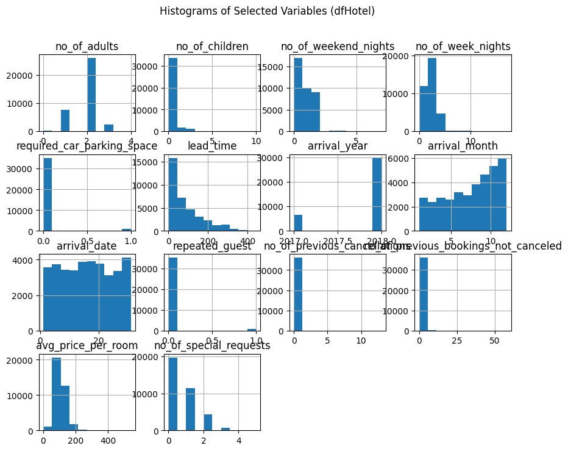
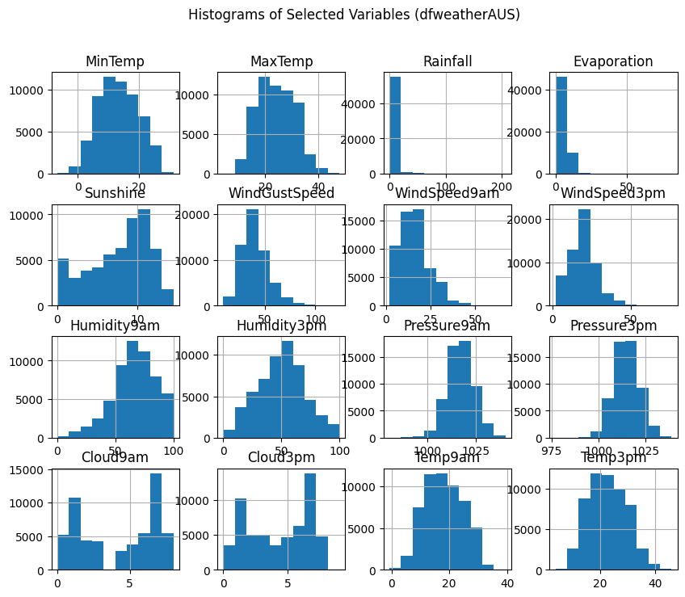
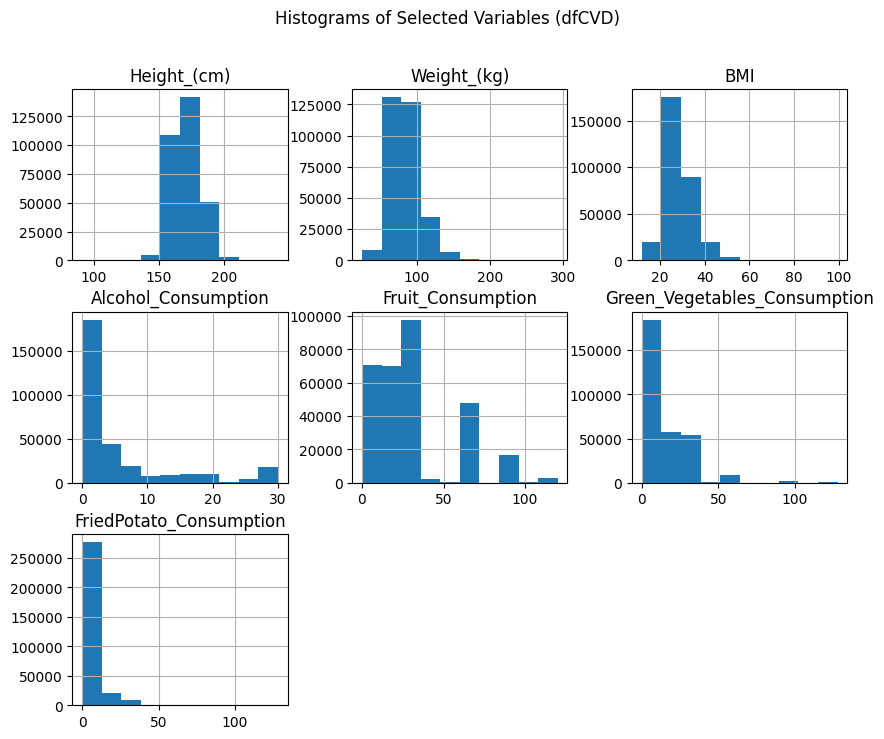
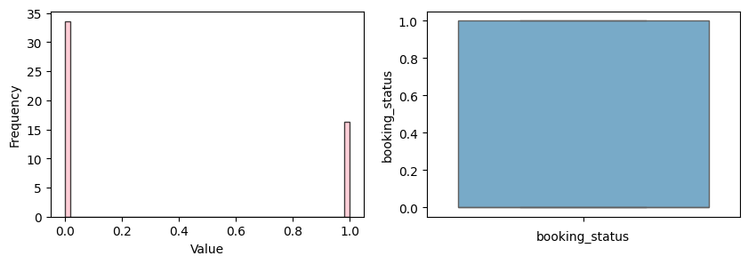
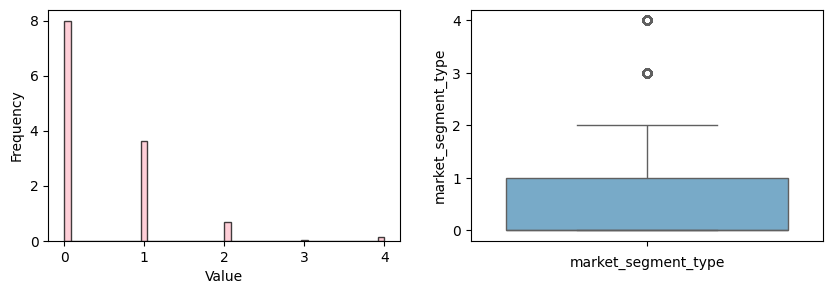
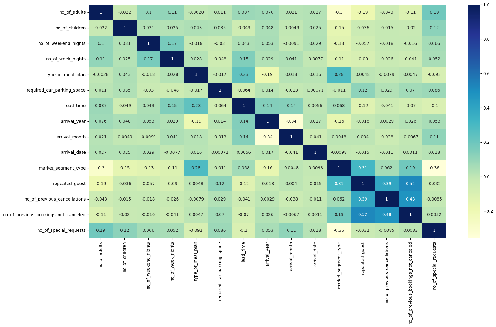

# importing main libraries
import pandas as pd
import numpy as np
import matplotlib.pyplot as plt
import seaborn as sns
import matplotlib.pyplot as plt
from scipy.stats import ttest_ind
import warnings
from sklearn.feature_selection import VarianceThreshold
warnings.filterwarnings("ignore")1. Introduction
2. Data Set
2.1 Hotel Reservation Data set
3. Data Recognition
As the first step, we need to import the main libraries to start analysis.
3.1 Loading Data
To use data, we need to import them and read the data. In this case, our data is CSV files, and it is in the folder whose name is data.
dfHotel = pd.read_csv('data\HotelReservations.csv')
dfHotel.head() | Booking_ID | no_of_adults | no_of_children | no_of_weekend_nights | no_of_week_nights | type_of_meal_plan | required_car_parking_space | room_type_reserved | lead_time | arrival_year | arrival_month | arrival_date | market_segment_type | repeated_guest | no_of_previous_cancellations | no_of_previous_bookings_not_canceled | avg_price_per_room | no_of_special_requests | booking_status | |
|---|---|---|---|---|---|---|---|---|---|---|---|---|---|---|---|---|---|---|---|
| 0 | INN00001 | 2 | 0 | 1 | 2 | Meal Plan 1 | 0 | Room_Type 1 | 224 | 2017 | 10 | 2 | Offline | 0 | 0 | 0 | 65.00 | 0 | Not_Canceled |
| 1 | INN00002 | 2 | 0 | 2 | 3 | Not Selected | 0 | Room_Type 1 | 5 | 2018 | 11 | 6 | Online | 0 | 0 | 0 | 106.68 | 1 | Not_Canceled |
| 2 | INN00003 | 1 | 0 | 2 | 1 | Meal Plan 1 | 0 | Room_Type 1 | 1 | 2018 | 2 | 28 | Online | 0 | 0 | 0 | 60.00 | 0 | Canceled |
| 3 | INN00004 | 2 | 0 | 0 | 2 | Meal Plan 1 | 0 | Room_Type 1 | 211 | 2018 | 5 | 20 | Online | 0 | 0 | 0 | 100.00 | 0 | Canceled |
| 4 | INN00005 | 2 | 0 | 1 | 1 | Not Selected | 0 | Room_Type 1 | 48 | 2018 | 4 | 11 | Online | 0 | 0 | 0 | 94.50 | 0 | Canceled |
dfCVD = pd.read_csv('data\CVD_cleaned.csv')
dfCVD.head() | General_Health | Checkup | Exercise | Heart_Disease | Skin_Cancer | Other_Cancer | Depression | Diabetes | Arthritis | Sex | Age_Category | Height_(cm) | Weight_(kg) | BMI | Smoking_History | Alcohol_Consumption | Fruit_Consumption | Green_Vegetables_Consumption | FriedPotato_Consumption | |
|---|---|---|---|---|---|---|---|---|---|---|---|---|---|---|---|---|---|---|---|
| 0 | Poor | Within the past 2 years | No | No | No | No | No | No | Yes | Female | 70-74 | 150.0 | 32.66 | 14.54 | Yes | 0.0 | 30.0 | 16.0 | 12.0 |
| 1 | Very Good | Within the past year | No | Yes | No | No | No | Yes | No | Female | 70-74 | 165.0 | 77.11 | 28.29 | No | 0.0 | 30.0 | 0.0 | 4.0 |
| 2 | Very Good | Within the past year | Yes | No | No | No | No | Yes | No | Female | 60-64 | 163.0 | 88.45 | 33.47 | No | 4.0 | 12.0 | 3.0 | 16.0 |
| 3 | Poor | Within the past year | Yes | Yes | No | No | No | Yes | No | Male | 75-79 | 180.0 | 93.44 | 28.73 | No | 0.0 | 30.0 | 30.0 | 8.0 |
| 4 | Good | Within the past year | No | No | No | No | No | No | No | Male | 80+ | 191.0 | 88.45 | 24.37 | Yes | 0.0 | 8.0 | 4.0 | 0.0 |
dfweatherAUS = pd.read_csv('data\weatherAUS.csv')
dfweatherAUS.head() | Date | Location | MinTemp | MaxTemp | Rainfall | Evaporation | Sunshine | WindGustDir | WindGustSpeed | WindDir9am | ... | Humidity9am | Humidity3pm | Pressure9am | Pressure3pm | Cloud9am | Cloud3pm | Temp9am | Temp3pm | RainToday | RainTomorrow | |
|---|---|---|---|---|---|---|---|---|---|---|---|---|---|---|---|---|---|---|---|---|---|
| 0 | 2008-12-01 | Albury | 13.4 | 22.9 | 0.6 | NaN | NaN | W | 44.0 | W | ... | 71.0 | 22.0 | 1007.7 | 1007.1 | 8.0 | NaN | 16.9 | 21.8 | No | No |
| 1 | 2008-12-02 | Albury | 7.4 | 25.1 | 0.0 | NaN | NaN | WNW | 44.0 | NNW | ... | 44.0 | 25.0 | 1010.6 | 1007.8 | NaN | NaN | 17.2 | 24.3 | No | No |
| 2 | 2008-12-03 | Albury | 12.9 | 25.7 | 0.0 | NaN | NaN | WSW | 46.0 | W | ... | 38.0 | 30.0 | 1007.6 | 1008.7 | NaN | 2.0 | 21.0 | 23.2 | No | No |
| 3 | 2008-12-04 | Albury | 9.2 | 28.0 | 0.0 | NaN | NaN | NE | 24.0 | SE | ... | 45.0 | 16.0 | 1017.6 | 1012.8 | NaN | NaN | 18.1 | 26.5 | No | No |
| 4 | 2008-12-05 | Albury | 17.5 | 32.3 | 1.0 | NaN | NaN | W | 41.0 | ENE | ... | 82.0 | 33.0 | 1010.8 | 1006.0 | 7.0 | 8.0 | 17.8 | 29.7 | No | No |
5 rows × 23 columns
dfHotel.shape(36275, 19)dfCVD.shape(308854, 19)dfweatherAUS.shape(145460, 23)With this function, we check all culmns and their type.
# getting data on dataset
dfHotel.info()
dfCVD.info()
dfweatherAUS.info()<class 'pandas.core.frame.DataFrame'>
RangeIndex: 36275 entries, 0 to 36274
Data columns (total 19 columns):
# Column Non-Null Count Dtype
--- ------ -------------- -----
0 Booking_ID 36275 non-null object
1 no_of_adults 36275 non-null int64
2 no_of_children 36275 non-null int64
3 no_of_weekend_nights 36275 non-null int64
4 no_of_week_nights 36275 non-null int64
5 type_of_meal_plan 36275 non-null object
6 required_car_parking_space 36275 non-null int64
7 room_type_reserved 36275 non-null object
8 lead_time 36275 non-null int64
9 arrival_year 36275 non-null int64
10 arrival_month 36275 non-null int64
11 arrival_date 36275 non-null int64
12 market_segment_type 36275 non-null object
13 repeated_guest 36275 non-null int64
14 no_of_previous_cancellations 36275 non-null int64
15 no_of_previous_bookings_not_canceled 36275 non-null int64
16 avg_price_per_room 36275 non-null float64
17 no_of_special_requests 36275 non-null int64
18 booking_status 36275 non-null object
dtypes: float64(1), int64(13), object(5)
memory usage: 5.3+ MB
<class 'pandas.core.frame.DataFrame'>
RangeIndex: 308854 entries, 0 to 308853
Data columns (total 19 columns):
# Column Non-Null Count Dtype
--- ------ -------------- -----
0 General_Health 308854 non-null object
1 Checkup 308854 non-null object
2 Exercise 308854 non-null object
3 Heart_Disease 308854 non-null object
4 Skin_Cancer 308854 non-null object
5 Other_Cancer 308854 non-null object
6 Depression 308854 non-null object
7 Diabetes 308854 non-null object
8 Arthritis 308854 non-null object
9 Sex 308854 non-null object
10 Age_Category 308854 non-null object
11 Height_(cm) 308854 non-null float64
12 Weight_(kg) 308854 non-null float64
13 BMI 308854 non-null float64
14 Smoking_History 308854 non-null object
15 Alcohol_Consumption 308854 non-null float64
16 Fruit_Consumption 308854 non-null float64
17 Green_Vegetables_Consumption 308854 non-null float64
18 FriedPotato_Consumption 308854 non-null float64
dtypes: float64(7), object(12)
memory usage: 44.8+ MB
<class 'pandas.core.frame.DataFrame'>
RangeIndex: 145460 entries, 0 to 145459
Data columns (total 23 columns):
# Column Non-Null Count Dtype
--- ------ -------------- -----
0 Date 145460 non-null object
1 Location 145460 non-null object
2 MinTemp 143975 non-null float64
3 MaxTemp 144199 non-null float64
4 Rainfall 142199 non-null float64
5 Evaporation 82670 non-null float64
6 Sunshine 75625 non-null float64
7 WindGustDir 135134 non-null object
8 WindGustSpeed 135197 non-null float64
9 WindDir9am 134894 non-null object
10 WindDir3pm 141232 non-null object
11 WindSpeed9am 143693 non-null float64
12 WindSpeed3pm 142398 non-null float64
13 Humidity9am 142806 non-null float64
14 Humidity3pm 140953 non-null float64
15 Pressure9am 130395 non-null float64
16 Pressure3pm 130432 non-null float64
17 Cloud9am 89572 non-null float64
18 Cloud3pm 86102 non-null float64
19 Temp9am 143693 non-null float64
20 Temp3pm 141851 non-null float64
21 RainToday 142199 non-null object
22 RainTomorrow 142193 non-null object
dtypes: float64(16), object(7)
memory usage: 25.5+ MB4. Data Pre-processing
This process is beneficial for several reasons. Reducing dimensionality, improving computational efficiency and enhancing model performance. In the pre-processing step, dimension reduction, outlier detection and missing value handling were conducted.
4.1. Dropping unnecessary columns and rows:
Dropping unnecessary columns and rows is a data preprocessing step that involves removing specific columns or rows from a dataset that are deemed unnecessary for the analysis or modeling task at hand. We selected the best columns using the feature selection algorithm and we will obtain the accuracy of the model before and after that.
4.2. Checking missing values
In most cases, we do not get complete datasets. They either have some missing values in the rows and columns. However, fortunately, we check whether the dataset has any missing values or not, and as you can see in the output of the block below, there is no missing value in this dataset
# Drop rows with null values
dfHotel =dfHotel.dropna()
dfCVD =dfCVD.dropna()
dfweatherAUS =dfweatherAUS.dropna()
dfHotel.info()
dfCVD.info()
dfweatherAUS.info()
dataframes = [dfweatherAUS, dfCVD, dfHotel]
for i, df in enumerate(dataframes, start=1):
shape = df.shape
print(f"Shape of df{i}: {shape}")<class 'pandas.core.frame.DataFrame'>
RangeIndex: 36275 entries, 0 to 36274
Data columns (total 19 columns):
# Column Non-Null Count Dtype
--- ------ -------------- -----
0 Booking_ID 36275 non-null object
1 no_of_adults 36275 non-null int64
2 no_of_children 36275 non-null int64
3 no_of_weekend_nights 36275 non-null int64
4 no_of_week_nights 36275 non-null int64
5 type_of_meal_plan 36275 non-null object
6 required_car_parking_space 36275 non-null int64
7 room_type_reserved 36275 non-null object
8 lead_time 36275 non-null int64
9 arrival_year 36275 non-null int64
10 arrival_month 36275 non-null int64
11 arrival_date 36275 non-null int64
12 market_segment_type 36275 non-null object
13 repeated_guest 36275 non-null int64
14 no_of_previous_cancellations 36275 non-null int64
15 no_of_previous_bookings_not_canceled 36275 non-null int64
16 avg_price_per_room 36275 non-null float64
17 no_of_special_requests 36275 non-null int64
18 booking_status 36275 non-null object
dtypes: float64(1), int64(13), object(5)
memory usage: 5.3+ MB
<class 'pandas.core.frame.DataFrame'>
RangeIndex: 308854 entries, 0 to 308853
Data columns (total 19 columns):
# Column Non-Null Count Dtype
--- ------ -------------- -----
0 General_Health 308854 non-null object
1 Checkup 308854 non-null object
2 Exercise 308854 non-null object
3 Heart_Disease 308854 non-null object
4 Skin_Cancer 308854 non-null object
5 Other_Cancer 308854 non-null object
6 Depression 308854 non-null object
7 Diabetes 308854 non-null object
8 Arthritis 308854 non-null object
9 Sex 308854 non-null object
10 Age_Category 308854 non-null object
11 Height_(cm) 308854 non-null float64
12 Weight_(kg) 308854 non-null float64
13 BMI 308854 non-null float64
14 Smoking_History 308854 non-null object
15 Alcohol_Consumption 308854 non-null float64
16 Fruit_Consumption 308854 non-null float64
17 Green_Vegetables_Consumption 308854 non-null float64
18 FriedPotato_Consumption 308854 non-null float64
dtypes: float64(7), object(12)
memory usage: 44.8+ MB
<class 'pandas.core.frame.DataFrame'>
Index: 56420 entries, 6049 to 142302
Data columns (total 23 columns):
# Column Non-Null Count Dtype
--- ------ -------------- -----
0 Date 56420 non-null object
1 Location 56420 non-null object
2 MinTemp 56420 non-null float64
3 MaxTemp 56420 non-null float64
4 Rainfall 56420 non-null float64
5 Evaporation 56420 non-null float64
6 Sunshine 56420 non-null float64
7 WindGustDir 56420 non-null object
8 WindGustSpeed 56420 non-null float64
9 WindDir9am 56420 non-null object
10 WindDir3pm 56420 non-null object
11 WindSpeed9am 56420 non-null float64
12 WindSpeed3pm 56420 non-null float64
13 Humidity9am 56420 non-null float64
14 Humidity3pm 56420 non-null float64
15 Pressure9am 56420 non-null float64
16 Pressure3pm 56420 non-null float64
17 Cloud9am 56420 non-null float64
18 Cloud3pm 56420 non-null float64
19 Temp9am 56420 non-null float64
20 Temp3pm 56420 non-null float64
21 RainToday 56420 non-null object
22 RainTomorrow 56420 non-null object
dtypes: float64(16), object(7)
memory usage: 10.3+ MB
Shape of df1: (56420, 23)
Shape of df2: (308854, 19)
Shape of df3: (36275, 19)# Checking for missing values in the entire dataset
dataframes = [dfweatherAUS, dfCVD, dfHotel]
for i, df in enumerate(dataframes, start=1):
missing_values = df.isnull().sum()
print(f"Missing values in df{i}:")
print(missing_values)Missing values in df1:
Date 0
Location 0
MinTemp 0
MaxTemp 0
Rainfall 0
Evaporation 0
Sunshine 0
WindGustDir 0
WindGustSpeed 0
WindDir9am 0
WindDir3pm 0
WindSpeed9am 0
WindSpeed3pm 0
Humidity9am 0
Humidity3pm 0
Pressure9am 0
Pressure3pm 0
Cloud9am 0
Cloud3pm 0
Temp9am 0
Temp3pm 0
RainToday 0
RainTomorrow 0
dtype: int64
Missing values in df2:
General_Health 0
Checkup 0
Exercise 0
Heart_Disease 0
Skin_Cancer 0
Other_Cancer 0
Depression 0
Diabetes 0
Arthritis 0
Sex 0
Age_Category 0
Height_(cm) 0
Weight_(kg) 0
BMI 0
Smoking_History 0
Alcohol_Consumption 0
Fruit_Consumption 0
Green_Vegetables_Consumption 0
FriedPotato_Consumption 0
dtype: int64
Missing values in df3:
Booking_ID 0
no_of_adults 0
no_of_children 0
no_of_weekend_nights 0
no_of_week_nights 0
type_of_meal_plan 0
required_car_parking_space 0
room_type_reserved 0
lead_time 0
arrival_year 0
arrival_month 0
arrival_date 0
market_segment_type 0
repeated_guest 0
no_of_previous_cancellations 0
no_of_previous_bookings_not_canceled 0
avg_price_per_room 0
no_of_special_requests 0
booking_status 0
dtype: int644.3 Checking for garbage values
Garbage value is generally a term meaning that the value in a variable which means nothing. By checking the statistical information of the data, some variables have negative values, and some have 0 values which are not compatible with the definition (corresponding to the dataset). The detail of these values is given in the following tables: *** Negative Values and Ziro for deleting *** Using this code, we check the data for minus and zero values if they are not compatible by the meaning they have.
::: {.cell vscode=‘{“languageId”:“python”}’ execution_count=48} {.python .cell-code} # get name the columns df.columns
::: {.cell-output .cell-output-display execution_count=48} Index(['Booking_ID', 'no_of_adults', 'no_of_children', 'no_of_weekend_nights', 'no_of_week_nights', 'type_of_meal_plan', 'required_car_parking_space', 'room_type_reserved', 'lead_time', 'arrival_year', 'arrival_month', 'arrival_date', 'market_segment_type', 'repeated_guest', 'no_of_previous_cancellations', 'no_of_previous_bookings_not_canceled', 'avg_price_per_room', 'no_of_special_requests', 'booking_status'], dtype='object') ::: :::
# Checking the negative values of no_of_adults
dataframes = [dfweatherAUS, dfCVD, dfHotel]
for i, df in enumerate(dataframes, start=1):
print(f"DataFrame {i}:")
for column in df.columns:
print(f"Value counts for column '{column}':")
print(df[column].value_counts())DataFrame 1:
Value counts for column 'Date':
Date
2010-11-16 25
2009-03-09 25
2009-03-28 25
2009-03-26 25
2010-05-17 25
..
2008-03-26 1
2008-03-25 1
2008-03-24 1
2008-03-23 1
2008-01-02 1
Name: count, Length: 3416, dtype: int64
Value counts for column 'Location':
Location
Darwin 3062
Perth 3025
Brisbane 2953
MelbourneAirport 2929
PerthAirport 2913
SydneyAirport 2870
Watsonia 2730
Mildura 2594
MountGambier 2465
NorfolkIsland 2464
Cairns 2444
Townsville 2419
WaggaWagga 2416
AliceSprings 2223
Nuriootpa 2008
Hobart 1939
Moree 1913
Melbourne 1898
Portland 1863
Woomera 1734
Sydney 1690
Sale 1678
CoffsHarbour 1380
Williamtown 1198
Canberra 1078
Cobar 534
Name: count, dtype: int64
Value counts for column 'MinTemp':
MinTemp
13.0 349
9.6 342
8.5 333
9.7 331
12.5 331
...
31.4 1
-5.3 1
-3.8 1
-5.8 1
-6.7 1
Name: count, Length: 348, dtype: int64
Value counts for column 'MaxTemp':
MaxTemp
19.6 303
18.2 300
19.4 300
20.1 298
23.5 294
...
45.4 1
47.3 1
45.8 1
6.3 1
7.5 1
Name: count, Length: 395, dtype: int64
Value counts for column 'Rainfall':
Rainfall
0.0 36709
0.2 3009
0.4 1593
0.6 1087
0.8 834
...
29.9 1
182.6 1
81.8 1
89.2 1
70.8 1
Name: count, Length: 410, dtype: int64
Value counts for column 'Evaporation':
Evaporation
4.0 2263
8.0 1745
2.2 1393
3.4 1365
2.4 1353
...
37.4 1
33.6 1
28.6 1
48.8 1
25.0 1
Name: count, Length: 259, dtype: int64
Value counts for column 'Sunshine':
Sunshine
0.0 1658
11.0 879
10.8 878
10.7 878
10.5 842
...
14.0 10
14.1 3
14.3 3
14.2 2
14.5 1
Name: count, Length: 145, dtype: int64
Value counts for column 'WindGustDir':
WindGustDir
E 4516
N 4210
W 4161
SW 4052
ENE 4028
SE 3930
SSW 3898
WSW 3791
S 3636
ESE 3312
SSE 3295
NE 3185
WNW 2989
NW 2612
NNE 2516
NNW 2289
Name: count, dtype: int64
Value counts for column 'WindGustSpeed':
WindGustSpeed
35.0 3965
39.0 3884
37.0 3727
31.0 3582
33.0 3580
...
113.0 2
122.0 1
9.0 1
124.0 1
111.0 1
Name: count, Length: 61, dtype: int64
Value counts for column 'WindDir9am':
WindDir9am
N 4967
E 4456
ENE 3932
SSE 3893
SE 3880
W 3707
S 3421
ESE 3400
NE 3390
SW 3356
NNE 3267
WSW 3037
NNW 3016
SSW 2926
WNW 2918
NW 2854
Name: count, dtype: int64
Value counts for column 'WindDir3pm':
WindDir3pm
SE 4153
S 4109
SW 4012
ENE 3946
W 3922
WSW 3856
E 3753
ESE 3703
N 3626
SSW 3485
NE 3390
SSE 3332
WNW 3200
NNW 2766
NW 2727
NNE 2440
Name: count, dtype: int64
Value counts for column 'WindSpeed9am':
WindSpeed9am
13.0 5911
9.0 5631
11.0 5000
17.0 4992
15.0 4702
7.0 4274
19.0 3694
20.0 3639
6.0 3342
24.0 2515
22.0 2359
4.0 1737
26.0 1688
28.0 1661
2.0 1182
30.0 1080
31.0 970
33.0 501
35.0 464
37.0 253
39.0 196
41.0 148
43.0 143
44.0 82
46.0 63
50.0 43
48.0 41
52.0 37
54.0 23
56.0 17
57.0 14
61.0 6
63.0 5
59.0 3
67.0 2
65.0 2
Name: count, dtype: int64
Value counts for column 'WindSpeed3pm':
WindSpeed3pm
17.0 5187
20.0 4940
13.0 4785
15.0 4530
19.0 4339
24.0 4124
22.0 3653
11.0 3548
9.0 3375
28.0 3089
26.0 2885
30.0 2185
7.0 1850
31.0 1837
33.0 1183
6.0 1085
35.0 1022
37.0 584
39.0 499
4.0 458
41.0 282
43.0 242
2.0 234
44.0 127
46.0 120
50.0 81
48.0 76
52.0 30
54.0 21
56.0 14
59.0 9
65.0 8
57.0 7
61.0 6
76.0 2
63.0 2
67.0 1
Name: count, dtype: int64
Value counts for column 'Humidity9am':
Humidity9am
68.0 1314
67.0 1300
69.0 1288
65.0 1286
64.0 1277
...
4.0 14
3.0 7
2.0 6
1.0 3
0.0 1
Name: count, Length: 101, dtype: int64
Value counts for column 'Humidity3pm':
Humidity3pm
52.0 1250
54.0 1202
55.0 1181
51.0 1172
53.0 1170
...
100.0 50
3.0 41
2.0 29
1.0 13
0.0 3
Name: count, Length: 101, dtype: int64
Value counts for column 'Pressure9am':
Pressure9am
1016.4 382
1015.9 361
1017.7 350
1018.2 349
1018.0 347
...
1039.6 1
1039.5 1
1037.6 1
1040.2 1
983.9 1
Name: count, Length: 504, dtype: int64
Value counts for column 'Pressure3pm':
Pressure3pm
1014.8 351
1013.5 351
1015.3 347
1013.4 346
1012.2 341
...
987.6 1
986.2 1
987.0 1
989.4 1
983.3 1
Name: count, Length: 507, dtype: int64
Value counts for column 'Cloud9am':
Cloud9am
7.0 14394
1.0 10677
8.0 5487
6.0 5403
0.0 5262
2.0 4378
3.0 4221
5.0 3757
4.0 2841
Name: count, dtype: int64
Value counts for column 'Cloud3pm':
Cloud3pm
7.0 13809
1.0 10162
6.0 6287
2.0 4961
3.0 4864
8.0 4724
5.0 4672
0.0 3470
4.0 3470
9.0 1
Name: count, dtype: int64
Value counts for column 'Temp9am':
Temp9am
16.6 343
16.7 333
14.8 330
14.7 329
17.0 328
...
0.0 1
-0.2 1
-0.5 1
0.6 1
38.0 1
Name: count, Length: 383, dtype: int64
Value counts for column 'Temp3pm':
Temp3pm
18.4 329
18.7 318
19.3 315
18.5 310
21.6 306
...
4.3 1
45.4 1
44.7 1
43.9 1
43.2 1
Name: count, Length: 393, dtype: int64
Value counts for column 'RainToday':
RainToday
No 43958
Yes 12462
Name: count, dtype: int64
Value counts for column 'RainTomorrow':
RainTomorrow
No 43993
Yes 12427
Name: count, dtype: int64
DataFrame 2:
Value counts for column 'General_Health':
General_Health
Very Good 110395
Good 95364
Excellent 55954
Fair 35810
Poor 11331
Name: count, dtype: int64
Value counts for column 'Checkup':
Checkup
Within the past year 239371
Within the past 2 years 37213
Within the past 5 years 17442
5 or more years ago 13421
Never 1407
Name: count, dtype: int64
Value counts for column 'Exercise':
Exercise
Yes 239381
No 69473
Name: count, dtype: int64
Value counts for column 'Heart_Disease':
Heart_Disease
No 283883
Yes 24971
Name: count, dtype: int64
Value counts for column 'Skin_Cancer':
Skin_Cancer
No 278860
Yes 29994
Name: count, dtype: int64
Value counts for column 'Other_Cancer':
Other_Cancer
No 278976
Yes 29878
Name: count, dtype: int64
Value counts for column 'Depression':
Depression
No 246953
Yes 61901
Name: count, dtype: int64
Value counts for column 'Diabetes':
Diabetes
No 259141
Yes 40171
No, pre-diabetes or borderline diabetes 6896
Yes, but female told only during pregnancy 2646
Name: count, dtype: int64
Value counts for column 'Arthritis':
Arthritis
No 207783
Yes 101071
Name: count, dtype: int64
Value counts for column 'Sex':
Sex
Female 160196
Male 148658
Name: count, dtype: int64
Value counts for column 'Age_Category':
Age_Category
65-69 33434
60-64 32418
70-74 31103
55-59 28054
50-54 25097
80+ 22271
40-44 21595
45-49 20968
75-79 20705
35-39 20606
18-24 18681
30-34 18428
25-29 15494
Name: count, dtype: int64
Value counts for column 'Height_(cm)':
Height_(cm)
168.0 27119
163.0 25804
170.0 24739
178.0 24673
173.0 23591
...
110.0 1
241.0 1
115.0 1
195.0 1
108.0 1
Name: count, Length: 99, dtype: int64
Value counts for column 'Weight_(kg)':
Weight_(kg)
90.72 16614
81.65 15104
72.57 13263
68.04 13240
77.11 12216
...
273.52 1
176.00 1
212.73 1
190.96 1
42.00 1
Name: count, Length: 525, dtype: int64
Value counts for column 'BMI':
BMI
26.63 3340
27.46 2658
24.41 2596
27.44 2567
27.12 2259
...
63.92 1
50.59 1
58.63 1
75.37 1
56.32 1
Name: count, Length: 3654, dtype: int64
Value counts for column 'Smoking_History':
Smoking_History
No 183590
Yes 125264
Name: count, dtype: int64
Value counts for column 'Alcohol_Consumption':
Alcohol_Consumption
0.0 140262
1.0 24983
4.0 23367
2.0 19740
8.0 13438
30.0 11976
3.0 11479
5.0 9622
20.0 9372
12.0 8825
10.0 7881
15.0 6178
28.0 5935
16.0 3602
6.0 3518
25.0 2670
7.0 2572
24.0 1253
14.0 486
29.0 309
9.0 239
27.0 205
21.0 197
18.0 196
22.0 152
26.0 126
17.0 78
13.0 76
23.0 65
11.0 41
19.0 11
Name: count, dtype: int64
Value counts for column 'Fruit_Consumption':
Fruit_Consumption
30.0 90273
60.0 48127
12.0 30259
8.0 22279
20.0 17476
...
41.0 1
116.0 1
54.0 1
62.0 1
85.0 1
Name: count, Length: 77, dtype: int64
Value counts for column 'Green_Vegetables_Consumption':
Green_Vegetables_Consumption
30.0 51162
12.0 41979
8.0 40329
4.0 37709
16.0 23338
...
34.0 1
93.0 1
128.0 1
37.0 1
53.0 1
Name: count, Length: 75, dtype: int64
Value counts for column 'FriedPotato_Consumption':
FriedPotato_Consumption
4.0 67833
0.0 44233
8.0 38366
2.0 36095
1.0 29876
...
49.0 1
76.0 1
34.0 1
98.0 1
97.0 1
Name: count, Length: 69, dtype: int64
DataFrame 3:
Value counts for column 'Booking_ID':
Booking_ID
INN00001 1
INN24187 1
INN24181 1
INN24182 1
INN24183 1
..
INN12086 1
INN12085 1
INN12084 1
INN12083 1
INN36275 1
Name: count, Length: 36275, dtype: int64
Value counts for column 'no_of_adults':
no_of_adults
2 26108
1 7695
3 2317
0 139
4 16
Name: count, dtype: int64
Value counts for column 'no_of_children':
no_of_children
0 33577
1 1618
2 1058
3 19
9 2
10 1
Name: count, dtype: int64
Value counts for column 'no_of_weekend_nights':
no_of_weekend_nights
0 16872
1 9995
2 9071
3 153
4 129
5 34
6 20
7 1
Name: count, dtype: int64
Value counts for column 'no_of_week_nights':
no_of_week_nights
2 11444
1 9488
3 7839
4 2990
0 2387
5 1614
6 189
7 113
10 62
8 62
9 34
11 17
15 10
12 9
14 7
13 5
17 3
16 2
Name: count, dtype: int64
Value counts for column 'type_of_meal_plan':
type_of_meal_plan
Meal Plan 1 27835
Not Selected 5130
Meal Plan 2 3305
Meal Plan 3 5
Name: count, dtype: int64
Value counts for column 'required_car_parking_space':
required_car_parking_space
0 35151
1 1124
Name: count, dtype: int64
Value counts for column 'room_type_reserved':
room_type_reserved
Room_Type 1 28130
Room_Type 4 6057
Room_Type 6 966
Room_Type 2 692
Room_Type 5 265
Room_Type 7 158
Room_Type 3 7
Name: count, dtype: int64
Value counts for column 'lead_time':
lead_time
0 1297
1 1078
2 643
3 630
4 628
...
300 1
353 1
328 1
352 1
351 1
Name: count, Length: 352, dtype: int64
Value counts for column 'arrival_year':
arrival_year
2018 29761
2017 6514
Name: count, dtype: int64
Value counts for column 'arrival_month':
arrival_month
10 5317
9 4611
8 3813
6 3203
12 3021
11 2980
7 2920
4 2736
5 2598
3 2358
2 1704
1 1014
Name: count, dtype: int64
Value counts for column 'arrival_date':
arrival_date
13 1358
17 1345
2 1331
4 1327
19 1327
16 1306
20 1281
15 1273
6 1273
18 1260
14 1242
30 1216
12 1204
8 1198
29 1190
21 1158
5 1154
26 1146
25 1146
1 1133
9 1130
28 1129
7 1110
24 1103
11 1098
3 1098
10 1089
27 1059
22 1023
23 990
31 578
Name: count, dtype: int64
Value counts for column 'market_segment_type':
market_segment_type
Online 23214
Offline 10528
Corporate 2017
Complementary 391
Aviation 125
Name: count, dtype: int64
Value counts for column 'repeated_guest':
repeated_guest
0 35345
1 930
Name: count, dtype: int64
Value counts for column 'no_of_previous_cancellations':
no_of_previous_cancellations
0 35937
1 198
2 46
3 43
11 25
5 11
4 10
13 4
6 1
Name: count, dtype: int64
Value counts for column 'no_of_previous_bookings_not_canceled':
no_of_previous_bookings_not_canceled
0 35463
1 228
2 112
3 80
4 65
5 60
6 36
7 24
8 23
10 19
9 19
11 15
12 12
14 9
15 8
16 7
13 7
18 6
20 6
21 6
17 6
19 6
22 6
25 3
27 3
24 3
23 3
44 2
29 2
48 2
28 2
30 2
32 2
31 2
26 2
46 1
55 1
45 1
57 1
53 1
54 1
58 1
41 1
40 1
43 1
35 1
50 1
56 1
33 1
37 1
42 1
51 1
38 1
34 1
39 1
52 1
49 1
47 1
36 1
Name: count, dtype: int64
Value counts for column 'avg_price_per_room':
avg_price_per_room
65.00 848
75.00 826
90.00 703
95.00 669
115.00 662
...
212.42 1
83.48 1
70.42 1
130.99 1
167.80 1
Name: count, Length: 3930, dtype: int64
Value counts for column 'no_of_special_requests':
no_of_special_requests
0 19777
1 11373
2 4364
3 675
4 78
5 8
Name: count, dtype: int64
Value counts for column 'booking_status':
booking_status
Not_Canceled 24390
Canceled 11885
Name: count, dtype: int64As shown above, there are no undefined values in each variables. Therefore, we omit no cases.
4.4 Checking the distribution of each variable
Checking the distribution of each variable involves examining the spread and pattern of values within individual columns or features in the dataset. Understanding the distribution helps you gain insights into the central tendencies, variability, and shape of the data. This is crucial for making informed decisions during data analysis and modeling. Common statistical measures used to describe the distribution include mean, median, and standard deviation. .
# check the distribution for each column
dataframes = {'dfweatherAUS': dfweatherAUS, 'dfCVD': dfCVD, 'dfHotel': dfHotel}
for name, df in dataframes.items():
print(f"DataFrame {name}:")
print(df.describe().T)DataFrame dfweatherAUS:
count mean std min 25% 50% 75% \
MinTemp 56420.0 13.464770 6.416689 -6.7 8.6 13.2 18.4
MaxTemp 56420.0 24.219206 6.970676 4.1 18.7 23.9 29.7
Rainfall 56420.0 2.130397 7.014822 0.0 0.0 0.0 0.6
Evaporation 56420.0 5.503135 3.696282 0.0 2.8 5.0 7.4
Sunshine 56420.0 7.735626 3.758153 0.0 5.0 8.6 10.7
WindGustSpeed 56420.0 40.877366 13.335232 9.0 31.0 39.0 48.0
WindSpeed9am 56420.0 15.667228 8.317005 2.0 9.0 15.0 20.0
WindSpeed3pm 56420.0 19.786778 8.510180 2.0 13.0 19.0 26.0
Humidity9am 56420.0 65.874123 18.513289 0.0 55.0 67.0 79.0
Humidity3pm 56420.0 49.601985 20.197040 0.0 35.0 50.0 63.0
Pressure9am 56420.0 1017.239505 6.909357 980.5 1012.7 1017.2 1021.8
Pressure3pm 56420.0 1014.795580 6.870892 977.1 1010.1 1014.7 1019.4
Cloud9am 56420.0 4.241705 2.797162 0.0 1.0 5.0 7.0
Cloud3pm 56420.0 4.326515 2.647251 0.0 2.0 5.0 7.0
Temp9am 56420.0 18.204961 6.567991 -0.7 13.1 17.8 23.3
Temp3pm 56420.0 22.710333 6.836543 3.7 17.4 22.4 27.9
max
MinTemp 31.4
MaxTemp 48.1
Rainfall 206.2
Evaporation 81.2
Sunshine 14.5
WindGustSpeed 124.0
WindSpeed9am 67.0
WindSpeed3pm 76.0
Humidity9am 100.0
Humidity3pm 100.0
Pressure9am 1040.4
Pressure3pm 1038.9
Cloud9am 8.0
Cloud3pm 9.0
Temp9am 39.4
Temp3pm 46.1
DataFrame dfCVD:
count mean std min 25% \
Height_(cm) 308854.0 170.615249 10.658026 91.00 163.00
Weight_(kg) 308854.0 83.588655 21.343210 24.95 68.04
BMI 308854.0 28.626211 6.522323 12.02 24.21
Alcohol_Consumption 308854.0 5.096366 8.199763 0.00 0.00
Fruit_Consumption 308854.0 29.835200 24.875735 0.00 12.00
Green_Vegetables_Consumption 308854.0 15.110441 14.926238 0.00 4.00
FriedPotato_Consumption 308854.0 6.296616 8.582954 0.00 2.00
50% 75% max
Height_(cm) 170.00 178.00 241.00
Weight_(kg) 81.65 95.25 293.02
BMI 27.44 31.85 99.33
Alcohol_Consumption 1.00 6.00 30.00
Fruit_Consumption 30.00 30.00 120.00
Green_Vegetables_Consumption 12.00 20.00 128.00
FriedPotato_Consumption 4.00 8.00 128.00
DataFrame dfHotel:
count mean std min \
no_of_adults 36275.0 1.844962 0.518715 0.0
no_of_children 36275.0 0.105279 0.402648 0.0
no_of_weekend_nights 36275.0 0.810724 0.870644 0.0
no_of_week_nights 36275.0 2.204300 1.410905 0.0
required_car_parking_space 36275.0 0.030986 0.173281 0.0
lead_time 36275.0 85.232557 85.930817 0.0
arrival_year 36275.0 2017.820427 0.383836 2017.0
arrival_month 36275.0 7.423653 3.069894 1.0
arrival_date 36275.0 15.596995 8.740447 1.0
repeated_guest 36275.0 0.025637 0.158053 0.0
no_of_previous_cancellations 36275.0 0.023349 0.368331 0.0
no_of_previous_bookings_not_canceled 36275.0 0.153411 1.754171 0.0
avg_price_per_room 36275.0 103.423539 35.089424 0.0
no_of_special_requests 36275.0 0.619655 0.786236 0.0
25% 50% 75% max
no_of_adults 2.0 2.00 2.0 4.0
no_of_children 0.0 0.00 0.0 10.0
no_of_weekend_nights 0.0 1.00 2.0 7.0
no_of_week_nights 1.0 2.00 3.0 17.0
required_car_parking_space 0.0 0.00 0.0 1.0
lead_time 17.0 57.00 126.0 443.0
arrival_year 2018.0 2018.00 2018.0 2018.0
arrival_month 5.0 8.00 10.0 12.0
arrival_date 8.0 16.00 23.0 31.0
repeated_guest 0.0 0.00 0.0 1.0
no_of_previous_cancellations 0.0 0.00 0.0 13.0
no_of_previous_bookings_not_canceled 0.0 0.00 0.0 58.0
avg_price_per_room 80.3 99.45 120.0 540.0
no_of_special_requests 0.0 0.00 1.0 5.0 Using this code, the most important statistical information of each numeric predictiors are calculated.
dataframes = {'dfweatherAUS': dfweatherAUS, 'dfCVD': dfCVD, 'dfHotel': dfHotel}
for name, df in dataframes.items():
df_numeric = df.select_dtypes(include=np.number)
print(f"Shape of numeric columns in DataFrame {name}: {df_numeric.shape}")Shape of numeric columns in DataFrame dfweatherAUS: (56420, 16)
Shape of numeric columns in DataFrame dfCVD: (308854, 7)
Shape of numeric columns in DataFrame dfHotel: (36275, 14)# finding zero variance variables
dataframes = {'dfweatherAUS': dfweatherAUS, 'dfCVD': dfCVD, 'dfHotel': dfHotel}
for name, df in dataframes.items():
df_numeric = df.select_dtypes(include=np.number)
selector_vr = VarianceThreshold(threshold=0)
transformed_data = selector_vr.fit_transform(df_numeric)
print(f"Transformed data shape for DataFrame {name}: {transformed_data.shape}")Transformed data shape for DataFrame dfweatherAUS: (56420, 16)
Transformed data shape for DataFrame dfCVD: (308854, 7)
Transformed data shape for DataFrame dfHotel: (36275, 14)If there are variables with standard deviation near the zero , we can delete it .
dataframes = {'dfweatherAUS': dfweatherAUS, 'dfCVD': dfCVD, 'dfHotel': dfHotel}
for name, df in dataframes.items():
print(f"DataFrame {name} - Head:")
print(df.head())
print(f"DataFrame {name} - Columns:")
print(df.columns)DataFrame dfweatherAUS - Head:
Date Location MinTemp MaxTemp Rainfall Evaporation Sunshine \
6049 2009-01-01 Cobar 17.9 35.2 0.0 12.0 12.3
6050 2009-01-02 Cobar 18.4 28.9 0.0 14.8 13.0
6052 2009-01-04 Cobar 19.4 37.6 0.0 10.8 10.6
6053 2009-01-05 Cobar 21.9 38.4 0.0 11.4 12.2
6054 2009-01-06 Cobar 24.2 41.0 0.0 11.2 8.4
WindGustDir WindGustSpeed WindDir9am ... Humidity9am Humidity3pm \
6049 SSW 48.0 ENE ... 20.0 13.0
6050 S 37.0 SSE ... 30.0 8.0
6052 NNE 46.0 NNE ... 42.0 22.0
6053 WNW 31.0 WNW ... 37.0 22.0
6054 WNW 35.0 NW ... 19.0 15.0
Pressure9am Pressure3pm Cloud9am Cloud3pm Temp9am Temp3pm \
6049 1006.3 1004.4 2.0 5.0 26.6 33.4
6050 1012.9 1012.1 1.0 1.0 20.3 27.0
6052 1012.3 1009.2 1.0 6.0 28.7 34.9
6053 1012.7 1009.1 1.0 5.0 29.1 35.6
6054 1010.7 1007.4 1.0 6.0 33.6 37.6
RainToday RainTomorrow
6049 No No
6050 No No
6052 No No
6053 No No
6054 No No
[5 rows x 23 columns]
DataFrame dfweatherAUS - Columns:
Index(['Date', 'Location', 'MinTemp', 'MaxTemp', 'Rainfall', 'Evaporation',
'Sunshine', 'WindGustDir', 'WindGustSpeed', 'WindDir9am', 'WindDir3pm',
'WindSpeed9am', 'WindSpeed3pm', 'Humidity9am', 'Humidity3pm',
'Pressure9am', 'Pressure3pm', 'Cloud9am', 'Cloud3pm', 'Temp9am',
'Temp3pm', 'RainToday', 'RainTomorrow'],
dtype='object')
DataFrame dfCVD - Head:
General_Health Checkup Exercise Heart_Disease Skin_Cancer \
0 Poor Within the past 2 years No No No
1 Very Good Within the past year No Yes No
2 Very Good Within the past year Yes No No
3 Poor Within the past year Yes Yes No
4 Good Within the past year No No No
Other_Cancer Depression Diabetes Arthritis Sex Age_Category \
0 No No No Yes Female 70-74
1 No No Yes No Female 70-74
2 No No Yes No Female 60-64
3 No No Yes No Male 75-79
4 No No No No Male 80+
Height_(cm) Weight_(kg) BMI Smoking_History Alcohol_Consumption \
0 150.0 32.66 14.54 Yes 0.0
1 165.0 77.11 28.29 No 0.0
2 163.0 88.45 33.47 No 4.0
3 180.0 93.44 28.73 No 0.0
4 191.0 88.45 24.37 Yes 0.0
Fruit_Consumption Green_Vegetables_Consumption FriedPotato_Consumption
0 30.0 16.0 12.0
1 30.0 0.0 4.0
2 12.0 3.0 16.0
3 30.0 30.0 8.0
4 8.0 4.0 0.0
DataFrame dfCVD - Columns:
Index(['General_Health', 'Checkup', 'Exercise', 'Heart_Disease', 'Skin_Cancer',
'Other_Cancer', 'Depression', 'Diabetes', 'Arthritis', 'Sex',
'Age_Category', 'Height_(cm)', 'Weight_(kg)', 'BMI', 'Smoking_History',
'Alcohol_Consumption', 'Fruit_Consumption',
'Green_Vegetables_Consumption', 'FriedPotato_Consumption'],
dtype='object')
DataFrame dfHotel - Head:
Booking_ID no_of_adults no_of_children no_of_weekend_nights \
0 INN00001 2 0 1
1 INN00002 2 0 2
2 INN00003 1 0 2
3 INN00004 2 0 0
4 INN00005 2 0 1
no_of_week_nights type_of_meal_plan required_car_parking_space \
0 2 Meal Plan 1 0
1 3 Not Selected 0
2 1 Meal Plan 1 0
3 2 Meal Plan 1 0
4 1 Not Selected 0
room_type_reserved lead_time arrival_year arrival_month arrival_date \
0 Room_Type 1 224 2017 10 2
1 Room_Type 1 5 2018 11 6
2 Room_Type 1 1 2018 2 28
3 Room_Type 1 211 2018 5 20
4 Room_Type 1 48 2018 4 11
market_segment_type repeated_guest no_of_previous_cancellations \
0 Offline 0 0
1 Online 0 0
2 Online 0 0
3 Online 0 0
4 Online 0 0
no_of_previous_bookings_not_canceled avg_price_per_room \
0 0 65.00
1 0 106.68
2 0 60.00
3 0 100.00
4 0 94.50
no_of_special_requests booking_status
0 0 Not_Canceled
1 1 Not_Canceled
2 0 Canceled
3 0 Canceled
4 0 Canceled
DataFrame dfHotel - Columns:
Index(['Booking_ID', 'no_of_adults', 'no_of_children', 'no_of_weekend_nights',
'no_of_week_nights', 'type_of_meal_plan', 'required_car_parking_space',
'room_type_reserved', 'lead_time', 'arrival_year', 'arrival_month',
'arrival_date', 'market_segment_type', 'repeated_guest',
'no_of_previous_cancellations', 'no_of_previous_bookings_not_canceled',
'avg_price_per_room', 'no_of_special_requests', 'booking_status'],
dtype='object')Now, we check the categorical variables and their categories to show the frequency of each values.
Histograms are useful for analyzing the frequency distribution of different values for each variable. In each histogram, the horizontal axis represents the variable values, and the vertical axis indicates the frequency or the number of times each value appears in the data. The height of each column reflects the frequency or the number of samples with a specific value in that interval.
# Specify the columns you want to include in the analysis - dfHotel
selected_columns_dfHotel = [ 'no_of_adults', 'no_of_children', 'no_of_weekend_nights',
'no_of_week_nights', 'type_of_meal_plan', 'required_car_parking_space',
'room_type_reserved', 'lead_time', 'arrival_year', 'arrival_month',
'arrival_date', 'market_segment_type', 'repeated_guest',
'no_of_previous_cancellations', 'no_of_previous_bookings_not_canceled',
'avg_price_per_room', 'no_of_special_requests', 'booking_status']
# Create a DataFrame containing only the selected columns
selected_dfHotel = dfHotel[selected_columns_dfHotel]
# Plot histograms for each variable
selected_dfHotel.hist(figsize=(10, 8))
plt.suptitle('Histograms of Selected Variables (dfHotel)')
plt.show()
# Specify the columns you want to include in the analysis - dfweatherAUS
selected_columns_dfweatherAUS = [ 'Date', 'Location', 'MinTemp', 'MaxTemp', 'Rainfall', 'Evaporation',
'Sunshine', 'WindGustDir', 'WindGustSpeed', 'WindDir9am', 'WindDir3pm',
'WindSpeed9am', 'WindSpeed3pm', 'Humidity9am', 'Humidity3pm',
'Pressure9am', 'Pressure3pm', 'Cloud9am', 'Cloud3pm', 'Temp9am',
'Temp3pm', 'RainToday', 'RainTomorrow']
# Create a DataFrame containing only the selected columns
selected_dfweatherAUS = dfweatherAUS[selected_columns_dfweatherAUS]
# Plot histograms for each variable
selected_dfweatherAUS.hist(figsize=(10, 8))
plt.suptitle('Histograms of Selected Variables (dfweatherAUS)')
plt.show()
# Specify the columns you want to include in the analysis - dfCVD
selected_columns_dfCVD = [ 'General_Health', 'Checkup', 'Exercise', 'Heart_Disease', 'Skin_Cancer',
'Other_Cancer', 'Depression', 'Diabetes', 'Arthritis', 'Sex',
'Age_Category', 'Height_(cm)', 'Weight_(kg)', 'BMI', 'Smoking_History',
'Alcohol_Consumption', 'Fruit_Consumption',
'Green_Vegetables_Consumption', 'FriedPotato_Consumption']
# Create a DataFrame containing only the selected columns
selected_dfCVD = dfCVD[selected_columns_dfCVD]
# Plot histograms for each variable
selected_dfCVD.hist(figsize=(10, 8))
plt.suptitle('Histograms of Selected Variables (dfCVD)')
plt.show()
# Displaying some statistics about categorical data
dataframes = {'dfweatherAUS': dfweatherAUS, 'dfCVD': dfCVD, 'dfHotel': dfHotel}
for name, df in dataframes.items():
print(f"DataFrame {name} - Summary statistics for object-type columns:")
print(df.describe(include='object'))DataFrame dfweatherAUS - Summary statistics for object-type columns:
Date Location WindGustDir WindDir9am WindDir3pm RainToday \
count 56420 56420 56420 56420 56420 56420
unique 3416 26 16 16 16 2
top 2010-11-16 Darwin E N SE No
freq 25 3062 4516 4967 4153 43958
RainTomorrow
count 56420
unique 2
top No
freq 43993
DataFrame dfCVD - Summary statistics for object-type columns:
General_Health Checkup Exercise Heart_Disease \
count 308854 308854 308854 308854
unique 5 5 2 2
top Very Good Within the past year Yes No
freq 110395 239371 239381 283883
Skin_Cancer Other_Cancer Depression Diabetes Arthritis Sex \
count 308854 308854 308854 308854 308854 308854
unique 2 2 2 4 2 2
top No No No No No Female
freq 278860 278976 246953 259141 207783 160196
Age_Category Smoking_History
count 308854 308854
unique 13 2
top 65-69 No
freq 33434 183590
DataFrame dfHotel - Summary statistics for object-type columns:
Booking_ID type_of_meal_plan room_type_reserved market_segment_type \
count 36275 36275 36275 36275
unique 36275 4 7 5
top INN00001 Meal Plan 1 Room_Type 1 Online
freq 1 27835 28130 23214
booking_status
count 36275
unique 2
top Not_Canceled
freq 24390 4.5 Data Transformation
4.5.1 Transforming the categorical variables
In this step, we numerized object variables . As it mentioned earlier, booking_status and target has two object:Not_Canceled , Canceled . For efficient use in the models, we convert Canceled to 1 and Not_Canceled to 0. If we have a column that is object or if we have Boolean, we can convert them to integer.
dfCVD.describe()| Height_(cm) | Weight_(kg) | BMI | Alcohol_Consumption | Fruit_Consumption | Green_Vegetables_Consumption | FriedPotato_Consumption | |
|---|---|---|---|---|---|---|---|
| count | 308854.000000 | 308854.000000 | 308854.000000 | 308854.000000 | 308854.000000 | 308854.000000 | 308854.000000 |
| mean | 170.615249 | 83.588655 | 28.626211 | 5.096366 | 29.835200 | 15.110441 | 6.296616 |
| std | 10.658026 | 21.343210 | 6.522323 | 8.199763 | 24.875735 | 14.926238 | 8.582954 |
| min | 91.000000 | 24.950000 | 12.020000 | 0.000000 | 0.000000 | 0.000000 | 0.000000 |
| 25% | 163.000000 | 68.040000 | 24.210000 | 0.000000 | 12.000000 | 4.000000 | 2.000000 |
| 50% | 170.000000 | 81.650000 | 27.440000 | 1.000000 | 30.000000 | 12.000000 | 4.000000 |
| 75% | 178.000000 | 95.250000 | 31.850000 | 6.000000 | 30.000000 | 20.000000 | 8.000000 |
| max | 241.000000 | 293.020000 | 99.330000 | 30.000000 | 120.000000 | 128.000000 | 128.000000 |
dfweatherAUS.describe()| MinTemp | MaxTemp | Rainfall | Evaporation | Sunshine | WindGustSpeed | WindSpeed9am | WindSpeed3pm | Humidity9am | Humidity3pm | Pressure9am | Pressure3pm | Cloud9am | Cloud3pm | Temp9am | Temp3pm | |
|---|---|---|---|---|---|---|---|---|---|---|---|---|---|---|---|---|
| count | 56420.000000 | 56420.000000 | 56420.000000 | 56420.000000 | 56420.000000 | 56420.000000 | 56420.000000 | 56420.000000 | 56420.000000 | 56420.000000 | 56420.000000 | 56420.000000 | 56420.000000 | 56420.000000 | 56420.000000 | 56420.000000 |
| mean | 13.464770 | 24.219206 | 2.130397 | 5.503135 | 7.735626 | 40.877366 | 15.667228 | 19.786778 | 65.874123 | 49.601985 | 1017.239505 | 1014.795580 | 4.241705 | 4.326515 | 18.204961 | 22.710333 |
| std | 6.416689 | 6.970676 | 7.014822 | 3.696282 | 3.758153 | 13.335232 | 8.317005 | 8.510180 | 18.513289 | 20.197040 | 6.909357 | 6.870892 | 2.797162 | 2.647251 | 6.567991 | 6.836543 |
| min | -6.700000 | 4.100000 | 0.000000 | 0.000000 | 0.000000 | 9.000000 | 2.000000 | 2.000000 | 0.000000 | 0.000000 | 980.500000 | 977.100000 | 0.000000 | 0.000000 | -0.700000 | 3.700000 |
| 25% | 8.600000 | 18.700000 | 0.000000 | 2.800000 | 5.000000 | 31.000000 | 9.000000 | 13.000000 | 55.000000 | 35.000000 | 1012.700000 | 1010.100000 | 1.000000 | 2.000000 | 13.100000 | 17.400000 |
| 50% | 13.200000 | 23.900000 | 0.000000 | 5.000000 | 8.600000 | 39.000000 | 15.000000 | 19.000000 | 67.000000 | 50.000000 | 1017.200000 | 1014.700000 | 5.000000 | 5.000000 | 17.800000 | 22.400000 |
| 75% | 18.400000 | 29.700000 | 0.600000 | 7.400000 | 10.700000 | 48.000000 | 20.000000 | 26.000000 | 79.000000 | 63.000000 | 1021.800000 | 1019.400000 | 7.000000 | 7.000000 | 23.300000 | 27.900000 |
| max | 31.400000 | 48.100000 | 206.200000 | 81.200000 | 14.500000 | 124.000000 | 67.000000 | 76.000000 | 100.000000 | 100.000000 | 1040.400000 | 1038.900000 | 8.000000 | 9.000000 | 39.400000 | 46.100000 |
dfHotel.describe()
dfHotel.describe(include='object')| Booking_ID | type_of_meal_plan | room_type_reserved | market_segment_type | booking_status | |
|---|---|---|---|---|---|
| count | 36275 | 36275 | 36275 | 36275 | 36275 |
| unique | 36275 | 4 | 7 | 5 | 2 |
| top | INN00001 | Meal Plan 1 | Room_Type 1 | Online | Not_Canceled |
| freq | 1 | 27835 | 28130 | 23214 | 24390 |
????
dataframes = {'dfweatherAUS': dfweatherAUS, 'dfCVD': dfCVD, 'dfHotel': dfHotel}
for name, df in dataframes.items():
print(f"DataFrame {name}:")
for column in df.columns:
if df[column].dtype == 'object':
unique_values = df[column].unique()
print(f"Unique values for column '{column}':")
print(unique_values)DataFrame dfweatherAUS:
Unique values for column 'Date':
['2009-01-01' '2009-01-02' '2009-01-04' ... '2016-07-08' '2016-06-04'
'2016-06-05']
Unique values for column 'Location':
['Cobar' 'CoffsHarbour' 'Moree' 'NorfolkIsland' 'Sydney' 'SydneyAirport'
'WaggaWagga' 'Williamtown' 'Canberra' 'Sale' 'MelbourneAirport'
'Melbourne' 'Mildura' 'Portland' 'Watsonia' 'Brisbane' 'Cairns'
'Townsville' 'MountGambier' 'Nuriootpa' 'Woomera' 'PerthAirport' 'Perth'
'Hobart' 'AliceSprings' 'Darwin']
Unique values for column 'WindGustDir':
['SSW' 'S' 'NNE' 'WNW' 'N' 'SE' 'ENE' 'NE' 'E' 'SW' 'W' 'WSW' 'NNW' 'ESE'
'SSE' 'NW']
Unique values for column 'WindDir9am':
['ENE' 'SSE' 'NNE' 'WNW' 'NW' 'N' 'S' 'SE' 'NE' 'W' 'SSW' 'E' 'NNW' 'ESE'
'WSW' 'SW']
Unique values for column 'WindDir3pm':
['SW' 'SSE' 'NNW' 'WSW' 'WNW' 'S' 'ENE' 'N' 'SE' 'NNE' 'NW' 'E' 'ESE' 'NE'
'SSW' 'W']
Unique values for column 'RainToday':
['No' 'Yes']
Unique values for column 'RainTomorrow':
['No' 'Yes']
DataFrame dfCVD:
Unique values for column 'General_Health':
['Poor' 'Very Good' 'Good' 'Fair' 'Excellent']
Unique values for column 'Checkup':
['Within the past 2 years' 'Within the past year' '5 or more years ago'
'Within the past 5 years' 'Never']
Unique values for column 'Exercise':
['No' 'Yes']
Unique values for column 'Heart_Disease':
['No' 'Yes']
Unique values for column 'Skin_Cancer':
['No' 'Yes']
Unique values for column 'Other_Cancer':
['No' 'Yes']
Unique values for column 'Depression':
['No' 'Yes']
Unique values for column 'Diabetes':
['No' 'Yes' 'No, pre-diabetes or borderline diabetes'
'Yes, but female told only during pregnancy']
Unique values for column 'Arthritis':
['Yes' 'No']
Unique values for column 'Sex':
['Female' 'Male']
Unique values for column 'Age_Category':
['70-74' '60-64' '75-79' '80+' '65-69' '50-54' '45-49' '18-24' '30-34'
'55-59' '35-39' '40-44' '25-29']
Unique values for column 'Smoking_History':
['Yes' 'No']
DataFrame dfHotel:
Unique values for column 'Booking_ID':
['INN00001' 'INN00002' 'INN00003' ... 'INN36273' 'INN36274' 'INN36275']
Unique values for column 'type_of_meal_plan':
['Meal Plan 1' 'Not Selected' 'Meal Plan 2' 'Meal Plan 3']
Unique values for column 'room_type_reserved':
['Room_Type 1' 'Room_Type 4' 'Room_Type 2' 'Room_Type 6' 'Room_Type 5'
'Room_Type 7' 'Room_Type 3']
Unique values for column 'market_segment_type':
['Offline' 'Online' 'Corporate' 'Aviation' 'Complementary']
Unique values for column 'booking_status':
['Not_Canceled' 'Canceled']#using Map Function
dfHotel2 = dfHotel.copy()
columns_to_drop = ['Booking_ID','room_type_reserved']
dfHotel2= dfHotel2.drop(columns=columns_to_drop)
# Ordinal Encoding for booking_status: 1 for 'Canceled', 0 for 'Not_Canceled'
ordinal_map = {'Canceled': 1, 'Not_Canceled': 0}
dfHotel2['booking_status'] = dfHotel2['booking_status'].map(ordinal_map)
dfHotel2['booking_status'] = dfHotel2['booking_status'].astype(int)
ordinal_map = {'Meal Plan 1': 1, 'Not Selected': 0 ,'Meal Plan 2': 2,'Meal Plan 3': 3}
dfHotel2['type_of_meal_plan'] = dfHotel2['type_of_meal_plan'].map(ordinal_map)
dfHotel2['type_of_meal_plan'] = dfHotel2['type_of_meal_plan'].astype(int)
ordinal_map = {'Offline': 1, 'Online': 0 ,'Corporate': 2,'Aviation': 3,'Complementary': 4,}
dfHotel2['market_segment_type'] = dfHotel2['market_segment_type'].map(ordinal_map)
dfHotel2['market_segment_type'] = dfHotel2['market_segment_type'].astype(int)4.5.2 Normalization, standardization, scaling
The data normalization process lowers the scale and brings all the data-points on the same scale. Normalization involves scaling the values of a variable to a specific range, usually between 0 and 1. Scaling is a general term for any transformation that alters the range of the data. Standardization (Z-score normalization) transforms the data to have a mean of 0 and a standard deviation of 1. we use scaling in the model selection section.
5 Data Exploration
We put our visualization here.
5.1 Finding outliers , dummy variable
Using of outlier detection methods depends on the type of data and the aim of analysis. However, generally, these methods are commonly applied to numerical and continuous variables. The reason for this is that the concept of outlier detection is more definable in continuous variables, and statistical measures such as mean, standard deviation, box plots, can easily be employed for detecting them. For detecting outliers of discrete and categorical variables, we need to find whether types of variables are integer or objects. We find the outliers, the Q1, Q3 and compare it with data and count how much of each independent variable out of this range and then recognize them . For each integer variable, we use boxplot and histogram for visualization. The plots for each variables are as follows: Box plot is oneof best chart to show distribution of data points. As the plot shows below,
plt.figure(figsize=(10,3))
plt.subplot(121)
plt.hist(np.array(dfHotel2['booking_status']) , density=True , bins=50, edgecolor='black' ,facecolor='pink', alpha=0.75)
plt.xlabel('Value', fontsize= 10)
plt.ylabel('Frequency', fontsize= 10)
plt.subplot(122)
sns.boxplot(y ='booking_status', data=dfHotel2,palette="Blues")
plt.xlabel('booking_status')
plt.show()
#calculate IQR and show thw outliers
Q1 = dfHotel2['booking_status'].quantile(0.25)
Q3 = dfHotel2['booking_status'].quantile(0.75)
print("Q1:",Q1)
print("Q3:",Q3)
IQR = Q3 - Q1
print("IQR:",IQR)
Out1=Q1 - 1.5 * IQR
print("Out1:",Out1)
Out2=Q3 + 1.5 * IQR
print("Out2:",Out2)
outliers_booking_status = (dfHotel2['booking_status'] < Q1 - 1.5 * IQR) | (dfHotel2['booking_status'] > Q3 + 1.5 * IQR)
# Filter the DataFrame to get the actual outlier values
outliers_booking_status = dfHotel2.loc[outliers_booking_status, 'booking_status']
# Display the outlier values
print("dfHotel2 :", outliers_booking_status)Q1: 0.0
Q3: 1.0
IQR: 1.0
Out1: -1.5
Out2: 2.5
dfHotel2 : Series([], Name: booking_status, dtype: int32)…………………………
plt.figure(figsize=(10,3))
plt.subplot(121)
plt.hist(np.array(dfHotel2['market_segment_type']) , density=True , bins=50, edgecolor='black' ,facecolor='pink', alpha=0.75)
plt.xlabel('Value', fontsize= 10)
plt.ylabel('Frequency', fontsize= 10)
plt.subplot(122)
sns.boxplot(y ='market_segment_type', data=dfHotel2,palette="Blues")
plt.xlabel('market_segment_type')
plt.show()
#calculate IQR and show thw outliers
Q1 = dfHotel2['market_segment_type'].quantile(0.25)
Q3 = dfHotel2['market_segment_type'].quantile(0.75)
print("Q1:",Q1)
print("Q3:",Q3)
IQR = Q3 - Q1
print("IQR:",IQR)
Out1=Q1 - 1.5 * IQR
print("Out1:",Out1)
Out2=Q3 + 1.5 * IQR
print("Out2:",Out2)
outliers_market_segment_type = (dfHotel2['market_segment_type'] < Q1 - 1.5 * IQR) | (dfHotel2['market_segment_type'] > Q3 + 1.5 * IQR)
# Filter the DataFrame to get the actual outlier values
outliers_market_segment_type = dfHotel2.loc[outliers_market_segment_type, 'market_segment_type']
# Display the outlier values
print("dfHotel2 :", outliers_market_segment_type)Q1: 0.0
Q3: 1.0
IQR: 1.0
Out1: -1.5
Out2: 2.5
dfHotel2 : 27 3
63 4
145 4
209 4
266 4
..
35469 4
35836 4
35983 4
36080 4
36165 4
Name: market_segment_type, Length: 516, dtype: int32# check the columns we can see outliers
toll_dfHotel2 = dfHotel2.loc[dfHotel2['market_segment_type']>2.5]
toll_dfHotel2.shape
dfHotel2 = dfHotel2.loc[dfHotel2['market_segment_type'] <= 2.5]
dfHotel2.shape(35759, 17)** Bar charts for discrete and categorical variables ***
To find the outliers of discrete and categorical variables we need to find the type of variables whether they are integer or objects . For each discrete variable (including Booleans), we used bar charts highlighting the target variable for each value.
int_dfHotel2 = dfHotel2.select_dtypes(include='integer')
int_dfHotel2.columnsIndex(['no_of_adults', 'no_of_children', 'no_of_weekend_nights',
'no_of_week_nights', 'type_of_meal_plan', 'required_car_parking_space',
'lead_time', 'arrival_year', 'arrival_month', 'arrival_date',
'market_segment_type', 'repeated_guest', 'no_of_previous_cancellations',
'no_of_previous_bookings_not_canceled', 'no_of_special_requests',
'booking_status'],
dtype='object')# Checking the linear correlation of variables
int_dfHotel2=int_dfHotel2[[
'no_of_adults', 'no_of_children', 'no_of_weekend_nights',
'no_of_week_nights', 'type_of_meal_plan', 'required_car_parking_space',
'lead_time', 'arrival_year', 'arrival_month', 'arrival_date',
'market_segment_type', 'repeated_guest', 'no_of_previous_cancellations',
'no_of_previous_bookings_not_canceled', 'no_of_special_requests',
'booking_status']]
corr_matrix = int_dfHotel2.corr()
corr_matrix['booking_status'].sort_values(ascending = False)booking_status 1.000000
lead_time 0.436424
arrival_year 0.178701
no_of_week_nights 0.086688
no_of_adults 0.082722
no_of_weekend_nights 0.055684
type_of_meal_plan 0.051049
no_of_children 0.033759
arrival_date 0.010556
arrival_month -0.010292
no_of_previous_cancellations -0.030477
no_of_previous_bookings_not_canceled -0.053903
required_car_parking_space -0.085186
repeated_guest -0.099190
market_segment_type -0.122970
no_of_special_requests -0.254448
Name: booking_status, dtype: float64plt.figure(figsize = (19,10))
sns.heatmap(int_dfHotel2[['no_of_adults', 'no_of_children', 'no_of_weekend_nights',
'no_of_week_nights', 'type_of_meal_plan', 'required_car_parking_space',
'lead_time', 'arrival_year', 'arrival_month', 'arrival_date',
'market_segment_type', 'repeated_guest', 'no_of_previous_cancellations',
'no_of_previous_bookings_not_canceled', 'no_of_special_requests',
]].corr(), cmap="YlGnBu",
annot=True)<Axes: >